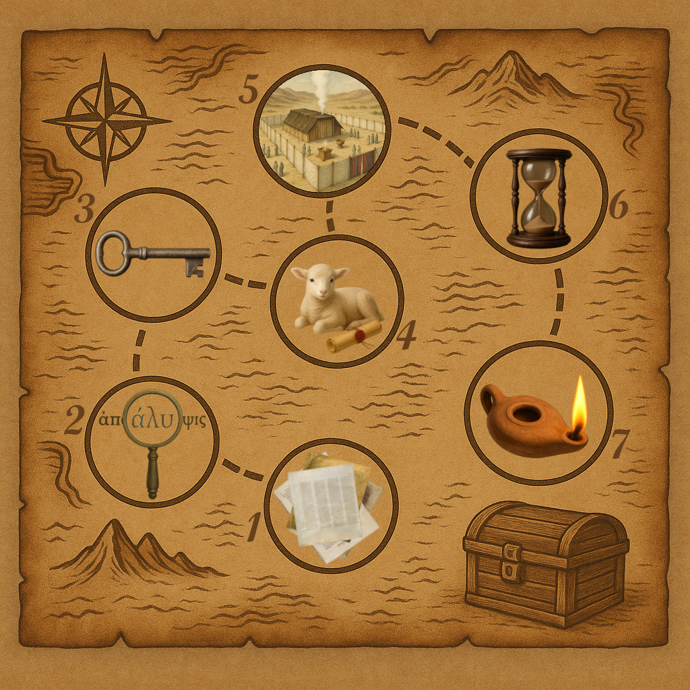
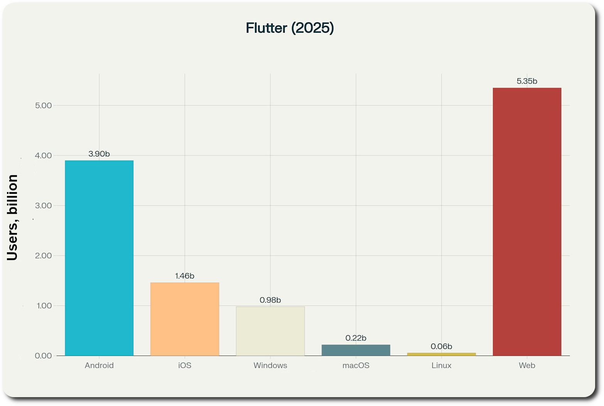

REVELATION
Приложение для глубокого изучения Книги Откровение.
Это образовательный и миссионерский проект с открытым исходным кодом, нацеленный на формирование более ясного и основанного на Библии представления об одной из самых сложных и часто неверно истолкованных книг — Книге Откровение.
Проблема и решение
В свете последних событий все больше людей проявляют интерес к заключительным пророчествам, описанным в Откровении.
❓ Проблема
Книга Откровение - одна из самых сложных для понимания книг Библии. Множество символов, пророчеств и образов требуют глубокого изучения. Но это похоже непростая задача, учитывая различия в доктринах, культурах, обычаях, поколениях и даже переводах Библии.
✅ Решение
Основная концепция приложения Revelation заключается в предоставлении пользователям структурированного, авторитетного и доступного инструмента как для ознакомления с Книгой Откровение, так и для ее глубокого изучения, избегая при этом спекулятивных и не основанных на Библии толкованиях.
Научная методология
📚 Основа изучения
Методология основана на принципе, изложенном в самом начале книги. Принцип указывает на важность чтения, слушания и соблюдения написанного в Откровении.
• Чтение представлено 2 этапами: прочтение оригинальных первоисточников, и полный грамматический и синтаксический разбор написанного.
• Слушание (ведущее к пониманию) представлено 3 важными этапами: выявление и анализ ветхозаветных аллюзий, взгляд на тексты в свете жизни и служения Иисуса Христа, поиск структур и связей с другими местами в Откровении и всей Библии.
• Соблюдение представлено 2 этапами: понимание того, как и какие пророчества исполнились в истории церкви и всего человечества, а какие еще ожидают исполнения. Также последний, но один из самых важных этапов, направлен на то, чтобы каждый заглянул в свою жизнь в свете прочитанного и понятого, чтобы принял решение о том, стоит ли что-то изменить в ней.

👨🏫 Авторский коллектив
Для реализации данной методологии планируется привлечь большое количество ученых лингвистов, богословов, историков, пасторов и других служителей. Каждый из них мог бы подготовить "краткий" и "углубленный" тексты комментариев соответствующего своей квалификации этапа одного из отрывков Откровения.
"Краткий" текст мог бы быть написанный в простой стилистике и небольшим по объему для более широкой аудитории. "Углубленный" текст уже может быть гораздо большего объема и содержать более узкую терминологию для желающих углубить свое понимание.
Разработчики и дизайнеры смогли бы снабдить тексты различными аудио и визуальными материалами для облегчения чтения и усвоения.
Технологические преимущества
Flutter Framework
Приложение Revelation построено на современном фреймворке Flutter от Google. Это означает, что мы пишем код один раз и запускаем его везде – на телефонах, планшетах, ПК и в браузерах. Таким образом одна команда разработчиков поддерживает весь спектр устройств, а не шесть отдельных команд работают над своими приложениями. На всех платформах приложение выглядит одинаково: в web, на Android, iOS, Windows, Mac или даже Linux – единый дизайн и отличная производительность.
6 платформ одновременно с минимальными затратами на разработку
Потенциальная аудитория
2/3 населения планеты

Приблизительный охват пользователей через кроссплатформенность
Исследования проведенные с помощью: ChatGPT, Grok3, Perplexity
Многоязычная поддержка
🌍 Глобальная локализация
Использование ИИ для первичного перевода
Проверка и корректировка носителями языка
Максимальное количество языков для глобального охвата
🤖 ИИ-перевод
Быстрое создание довольно качественных базовых переводов с использованием передовых больших языковых моделей ИИ
👥 Сообщество
Формирование сообщества носителей различных языков для проверки и улучшения переводов интерфейса и комментариев
План развития
Фаза 1: Подготовительная (текущая)
👍 Базовый функционал для показа первоисточников, и для поддержания текстового и графического содержимого комментариев
📜 Предисловие
🌍 Английский, Испанский, Русский, Украинский
💻 Web, Android, Windows, Linux, iOS, macOS
📢 Поиск спонсоров, разработчиков, дизайнеров и тестировщиков
Фаза 2: Пролог
👍 Продвинутый функционал для работы с первоисточниками (этап 1)
📜 Откровение 1:1–8
🌍 Основные европейские языки
📢 Поиск спонсоров, ученых, богословов, служителей и носителей языков
Фаза 3: Семь Церквей
👍 Продвинутый функционал для работы со словарем и структурой предложений (этап 2)
📜 Откровение 1:9–3:22
🌍 Основные азиатские языки
📢 Поиск носителей языков
Фаза 4: Семь Печатей
👍 Продвинутый функционал для поиска и анализа аллюзий и ссылок (этап 3)
📜 Откровение 4:1–8:1
🌍 Основные африканские языки
📢 Поиск носителей языков. Реклама в Северной Америке
Фаза 5: Семь Труб
👍 Продвинутый функционал для помощи в понимании как каждый раздел указывает на личность и служение Христа (этап 4)
📜 Откровение 8:2–11:18
🌍 "Не европейские" языки Южной и Северной Америк
📢 Поиск носителей языков. Реклама в Европе
Фаза 6: Последний кризис
👍 Продвинутый функционал для изучения и соотнесения отрывков с выявленными структурами, анализ связей с другими книгами Нового Завета, Книгой Даниила, Ветхим Заветом и Библией в целом (этап 5)
📜 Откровение 11:19–15:4
🌍 "Не европейские" языки Австралии и Океании
📢 Поиск носителей языков. Реклама в Азии
Фаза 7: Семь Чаш
👍 Продвинутый функционал для работы с историческими фактами, хронологические шкалы и т.п. (этап 6)
📜 Откровение 15:5–18:24
🌍 Дополнительные европейские языки
📢 Поиск носителей языков. Реклама в Африке
Фаза 8: Тысячелетнее Царство
👍 Продвинутый функционал для извлечения духовных уроков для личной жизни, ведение духовных дневников и т.п. (этап 7)
📜 Откровение 19:1–20:15
🌍 Дополнительные азиатские языки
📢 Поиск носителей языков. Реклама в Южной Америке
Фаза 9: Новый Иерусалим
👍 Продвинутый функционал для поддержки мультимедийного содержимого в комментариях на каждый отрывок
📜 Откровение 21:1–22:5
🌍 Дополнительные африканские языки
📢 Поиск носителей языков. Реклама в Австралии и Океании
Фаза 10: Эпилог
📜 Откровение 22:6–21
🌍 Прочие языки малых народностей
📢 Поиск носителей языков. Глобальные и локальные рекламные компании
🕊️ Миссионерский проект
"Идите и научите все народы"
Это не просто приложение - это амбициозный миссионерский проект глобального масштаба.
Трехангельская весть
Изучение важнейших пророчеств книги Откровения, включая вести трех ангелов
Всемирный охват
Ознакомление христиан всех конфессий, представителей других религий и даже неверующих с вестью Откровения
Планируется использование в будущих евангельских и рекламных кампаниях по всему миру для максимального распространения Божьей вести.
Присоединяйтесь к проекту
Приложение Revelation будет сочетать передовые технологии и глубокую богословскую работу, чтобы сделать Книгу Откровение доступной для всех. Мы приглашаем вас поддержать проект и присоединиться к его миссии по распространению ясного понимания Книги Откровение.
🤝 Как вы можете помочь
• 🙏 Молиться за нас
• 📢 Поделиться этой ссылкой
• 💳 Стать спонсором через GoFundMe, WayGiver, GiveSendGo
• 👨💻 Участвовать в разработке на GitHub
• 📐 Тестировать приложение
• 📝 Наполнять контентом
• 🌍 Участвовать в переводах
📩 Контакты
Телеграм: @karnauhov
Почта: karnauhov.oleg@gmail.com
Телефон: +38(067)787-2617
🙏 Большая благодарность вам за проявленный интерес 🙏